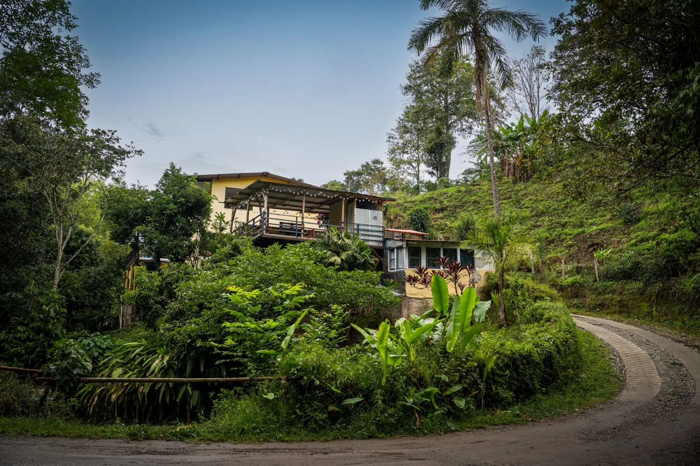
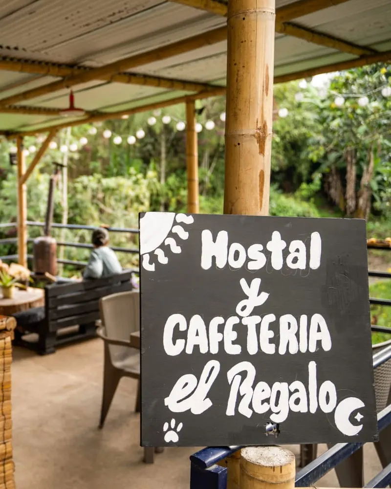
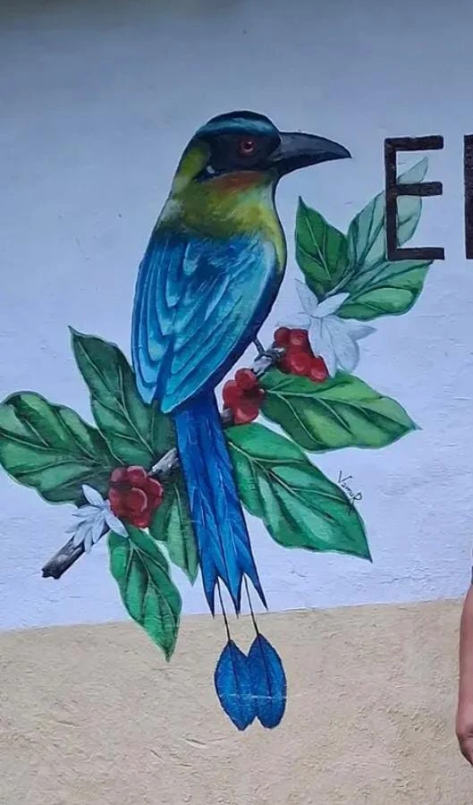
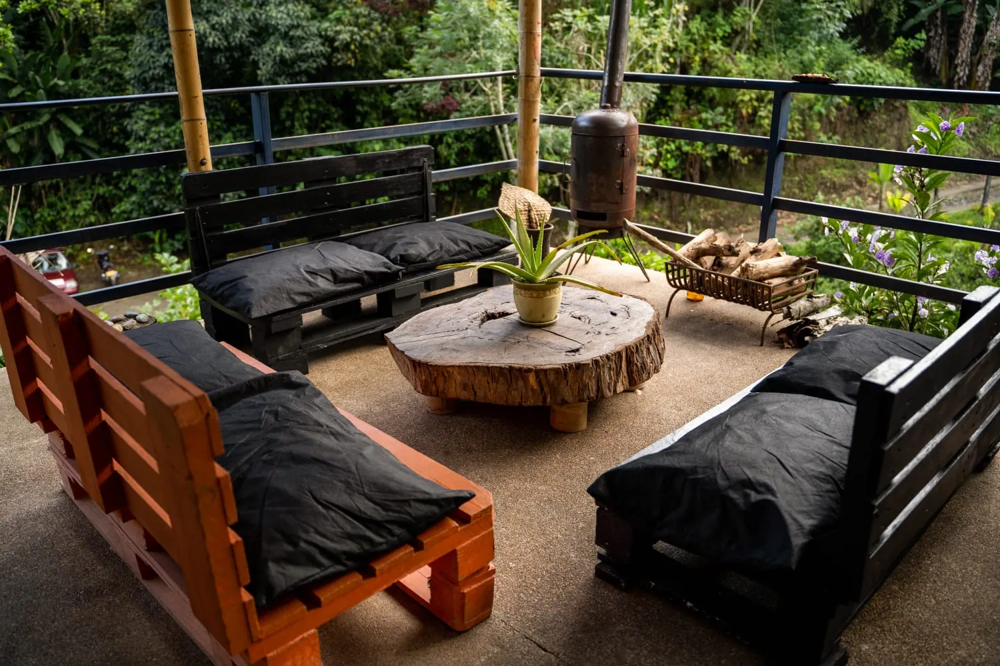

Salento · Quindío · Vereda Palestina
El Regalo Hostal & Cafetería
Descanso, café y naturaleza en armonía.
Sobre nosotros
Un refugio entre paisajes y aves para vivir experiencias inolvidables
El Regalo nació en una finca de la Vereda Palestina, a las afueras de Salento, rodeada de cafetales, guaduas y montañas. Aquí el tiempo va más despacio: el café se toma con calma y las historias de viaje se comparten en la terraza.
Somos un hostal familiar y una cafetería de comida típica. Te recibimos como en casa, te contamos los mejores planes del Quindío —el Valle de Cocora, las fincas cafeteras, los miradores— y te esperamos con un tinto recién colado cuando vuelvas.
- Entre cafetales
- Vista a la montaña
- Ambiente familiar


Dónde dormir
Habitaciones
Camas cómodas, cobijas gruesas para las noches frías de montaña y ventanas que dan al verde. Elige la que mejor va con tu viaje.
Tarifas y disponibilidad por WhatsApp: te respondemos rápido.
Comodidades
Todo lo que necesitas
Lo básico bien hecho y unos cuantos detalles que hacen la diferencia.
WiFi gratis
En habitaciones y zonas comunes.
Cafetería
Café de la región y comida típica.
Desayuno
Un buen desayuno típico para empezar el día.
Zona común
Hamacas, juegos y buena charla.
Terraza con vista
Atardeceres sobre las montañas.
Agua caliente
Para las mañanas frescas de montaña.
Galería
Así se vive El Regalo
Toca una foto para verla en grande.
Cafetería
Comida típica y café de la vereda
Bandeja paisa, trucha, arepas, chocolate santafereño y el café que se cultiva a pocos metros. Ven aunque no te hospedes: la cafetería está abierta para todos.
- ES
- EN
- FR
- DE
- PT

Ubicación
Cómo llegar
Estamos en el campo, a pocos minutos del pueblo de Salento: lo bastante cerca para todo y lo bastante lejos para descansar.
Dirección
Vereda Palestina, vía a la Finca El Ocaso · Salento, Quindío, Colombia
- Llega a SalentoBuses directos desde Armenia y Pereira llegan a la terminal del pueblo.
- Toma el Willys a la Finca El OcasoDesde la plaza principal salen los Willys hacia la Finca El Ocaso. Pide que te dejen en El Regalo: estamos sobre esa misma vía.
- O ven caminandoEs un paseo bonito entre cafetales. Escríbenos y te enviamos la ubicación exacta.
Contacto
¿Hablamos?
Pregúntanos por disponibilidad, tarifas, planes o cómo llegar. Respondemos en español e inglés.
Recepción
Todos los días · 7:00 a. m. – 9:00 p. m. Check-in desde las 2:00 p. m.; check-out hasta las 11:00 a. m.
Cafetería
Lunes a viernes · 10:00 a. m. – 7:00 p. m. Fines de semana y festivos · 9:00 a. m. – 10:00 p. m.